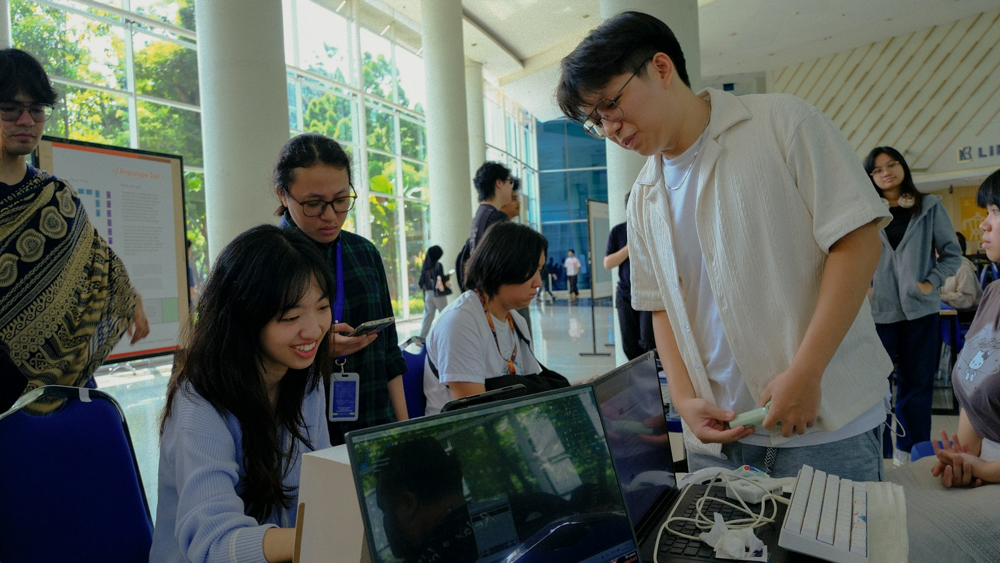

インターン募集

高専ベンチャーでは、高専生に向けて、主にリモートで参加できるインターンをご紹介しています。
長期インターン
産業用部品関連サービスの開発
| 期間 | 1か月〜 |
|---|---|
| 時期 | 通年 |
| 稼働 | 週2日・3時間〜 |
| 勤務 | リモート |
| 要件 | Webアプリ、スマホアプリなどサービスの作成経験 |
| 内容 | 新サービス開発の企画・コーディング・テストのサポート |
短期インターン
アプリ開発
| 期間 | 5日〜1か月 |
|---|---|
| 時期 | 春、夏 |
| 要件 | 不問（初心者歓迎） |
| 内容 | 簡単なアプリ開発 |
お問い合わせフォームに「長期インターン希望」または「短期インターン希望」とご記入ください。
よくあるご質問
- プログラミング未経験でも参加できますか？
- 短期インターンは初心者歓迎です。長期インターンは、Webアプリやスマホアプリを作った経験のある方が対象です。
- 遠方に住んでいても参加できますか？
- 長期インターンはリモートで実施しています。
- インターンについて質問したいです。
- お問い合わせフォームからお気軽にご質問ください。